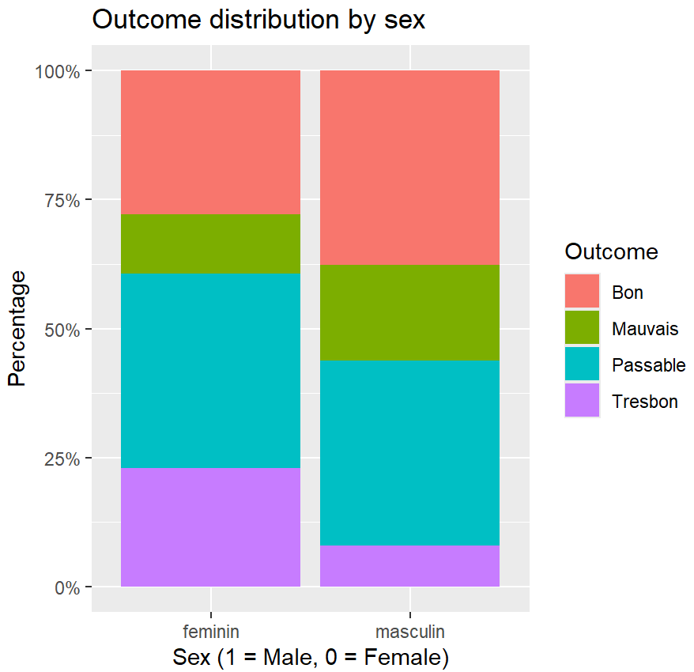
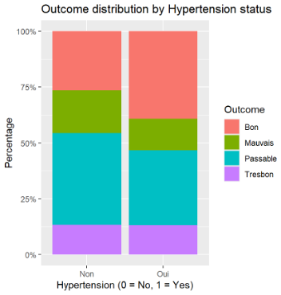
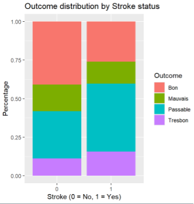

Prognosis Prediction in Speech Rehabilitation
Using Data from the Mon Dossier Électronique Project in Benin
Lu Wang & Pin-Hsin Chiang
2025-12-03
Outline
1. Introduction
2. Literature Review
3. Methodology
4. Results
5. Discussion
6. Conclusion
7. Future Research
1. Introduction
Background
Speech and language rehabilitation is essential for patients with neurological or acquired communication disorders.
Recovery outcomes vary widely due to demographic, clinical, and treatment-related factors.
Context
In Benin, the Mon Dossier Électronique platform introduced structured digital health records.
This enables systematic clinical data analysis—previously impossible under paper-based systems.
Problem
Clinicians currently lack data-driven tools to identify which patients are most likely to recover well.
Research Gap
There is limited quantitative analysis on how age, sex, stroke, hypertension, therapy duration and session frequency affect rehabilitation outcomes in real world low resource settings.
The present study uses digital clinical records to examine how these variables shape the likelihood of favorable speech rehabilitation outcomes.
Research Question
How do demographic, clinical, and treatment-related factors influence the likelihood of positive speech rehabilitation outcomes among patients in Benin’s Mon Dossier Électronique system?
Objective
Build a predictive model using real clinical records.
Identify key predictors to improve triage, follow-up, and resource allocation.
2. Literature Review
Key themes in prior research:
Speech-Language Therapy Outcomes and Clinical Predictors
- Brady et al. (2016).
- Bhogal, Teasell, and Speechley (2003).
- Lazar et al. (2008).
- Saur et al. (2006).
Demographic and Vascular Factors Influencing Rehabilitation
- Flowers, Swartz and Stead (2016).
Digital Health, Data Quality, and Rehabilitation Monitoring
- Häyrinen, Saranto, and Nykänen (2008).
Summary of Literature
Speech rehabilitation outcomes reflect interactions between:
- Clinical characteristics
- Demographic attributes
- Vascular conditions
- Digital health system quality
Few studies analyze real world structured rehab data in resource limited settings.
Hypotheses
H1. Female patients are more likely to achieve better outcomes.
H2. Hypertensive patients tend to show poorer recovery.
H3. The negative effect of hypertension is stronger among male patients.
Rationale behind Hypotheses
Supporting patterns:
- Women: higher participation & engagement
- Hypertension: greater therapeutic burden
- Sex × Hypertension: potential compounded risk
3.1 Data Source
Dataset originates from the Mon Dossier Électronique system at CHU Benin.
The project addresses:
- inconsistent follow-up
- fragmented paper records
- lack of structured information
Digitalization enables reliable demographic, comorbidity and therapy outcome data.
3.2 Variables
Outcome variable: resultats
Ordered categorical:
Mauvais < Passable < Bon < Très bon
Treated as ordinal.
Independent Variables
- sex (1 male, 0 female)
- hypertension (0 no, 1 yes)
- stroke (0 no, 1 yes)
Interaction Term
- Sex × Hypertension
- Additionally, two exploratory interactions were tested: Sex × Stroke (sexe × accident_vasculaire_cerebral) Hypertension × Stroke (hypertensionart × accident_vasculaire_cerebral)
Control Variables
Initially considered but removed via AIC stepwise selection:
- Age
- Disorder duration
- Number of therapy sessions
3.3 Model Building Strategy
Steps:
1. Full model with all variables
2. AIC stepwise selection
3. Main effects model (Model 1)
4. Interaction model (Model 2)
5. Full robustness model (Model 3)
6. Odds ratio computation
7. Stargazer reporting
3.4 Preprocessing
- Removed missing/undefined rehab outcomes
- Converted categorical to dummy variables
- Cleaned continuous variables
3.5 Statistical Approach
Ordinal Logistic Regression (polr(), MASS package)
Model estimates log odds of achieving a higher rehabilitation category.
Model comparison using:
AIC
Likelihood Ratio Tests
p-values
Odds ratios
Three models were estimated, with two major models:
Model 1: Baseline Model (Main Effects Only) Tests the direct effects of sex and hypertension:
Model 2: Interaction Model (Moderation Test) Tests whether the effect of hypertension differs by sex: 
Extended interaction model 
4. Results
Includes:
- Outcome distribution
- Sex patterns
- Hypertension patterns
- Stroke patterns
- Regression estimates
Outcome Distribution
- Passable and Bon dominate.
- Mauvais and Très bon less frequent but distribution is balanced for ordinal modeling.

Sex Differences
Females have higher proportions of Passable and Très bon.
Supports H1.

Hypertension Differences
Hypertensive patients have higher Mauvais rates.
Supports H2 directionally.

Stroke Differences
- Stroke patients have higher Passable and Très bon outcomes.
- Strong clinical predictor.

Regression – Main Effects
- Sex: β = –0.672, p < 0.05
- Hypertension: β = –0.520, p < 0.10
- Stroke: β = 0.749, p < 0.05
H1 supported, H2 partially supported.

Regression – Interaction
Sex × Hypertension:
β = –0.750 (n.s.)
→ No strong evidence for H3.
Other interactions (Sex × Stroke, Hypertension × Stroke) also not significant.
Variance Inflation Factors (VIFs)
Were computed for all predictors in the full model.
All VIF values fell between 1.02 and 1.34, far below the commonly used thresholds of 5 or 10.
This confirms that multicollinearity is negligible and does not affect coefficient estimation or interpretation.

Sex Differences (H1)
Female patients consistently demonstrate better outcomes.
Possible explanations:
- higher adherence
- stronger engagement
- earlier therapy entry
Hypertension (H2)
Negative, marginally significant effect.
Clinical interpretations:
- reduced cerebral perfusion
- impaired neuroplasticity
- inconsistent follow up in Benin
Stroke Predictor
Stroke shows strong positive association with outcomes.
Interpretation:
- stroke patients are routed more reliably into structured therapy
- earlier intervention
- clearer diagnostic pathways
Interaction Effects (H3 not supported)
Sex × Hypertension (H3)
Coefficient is negative but not significant (β = –0.750, SE = 0.602).
No evidence that hypertension affects men and women differently.
However, the negative direction suggests a possible trend: → Hypertensive female patients may recover slightly better than men.
Other Exploratory Interactions
Sex × Stroke: small negative tendency → stroke-related benefits may be slightly weaker for men.
Hypertension × Stroke: negative tendency → hypertension may slightly reduce stroke-related recovery advantages.
None of these interactions are statistically significant.
Why?
Sample size too small for detecting interaction effects (N = 175).
Comorbidities are binary (0/1), hiding severity differences.
Unequal subgroup sizes (e.g., few hypertensive females).
Conclusion
H3 not supported, but interaction directions show potential clinical patterns worth exploring in future research.
Clinical Implications
Digital records support:
- targeted triage
- resource allocation
- improved continuity of care
- evidence-based rehabilitation planning
Limitations
- selection bias
- limited comorbidity detail
- measurement inconsistencies
- outcome category compression
- limited power for interactions
6. Conclusion
Key conclusions:
- Sex and stroke strongly predict outcomes
- Hypertension negative but inconsistent
- Interactions weak
- Digital records enable clinically meaningful insights
7. Future Research
- Machine learning (KNN, Random Forest)
- SEM for latent constructs
- Longitudinal data collection
- R Shiny clinical decision support tools
Thank you!
Questions welcome.